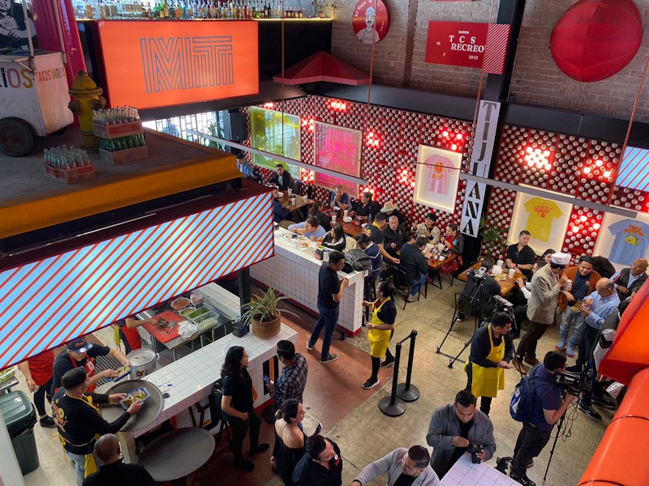

NOSOTROS
- Bienvenidos a Sabores de Tijuana, un restaurante donde el auténtico sabor de la Baja California cobra vida en cada platillo. Inspirados en la rica tradición culinaria de Tijuana, combinamos ingredientes frescos del mar y la tierra para ofrecer una experiencia gastronómica inigualable. Desde nuestros famosos tacos de carne asada hasta los irresistibles mariscos, nuestro compromiso es con la calidad y el sazón que nos distingue.
|

|